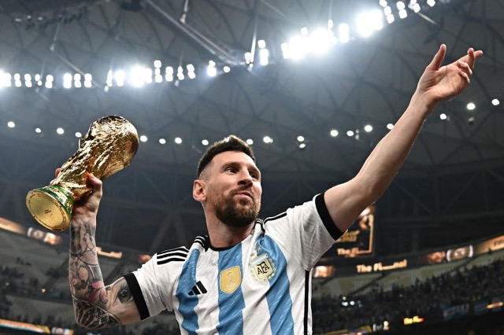
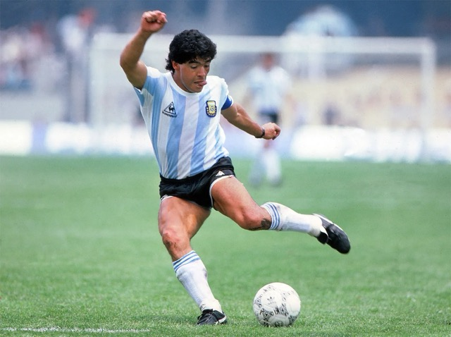
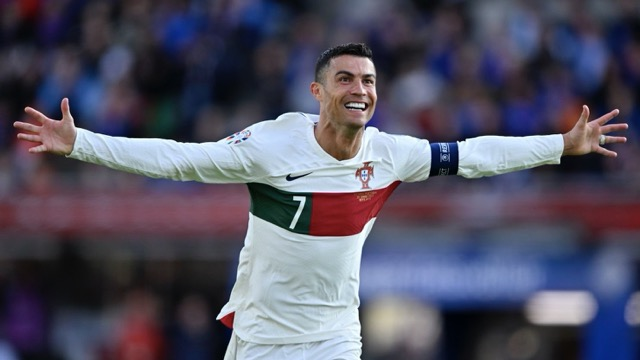
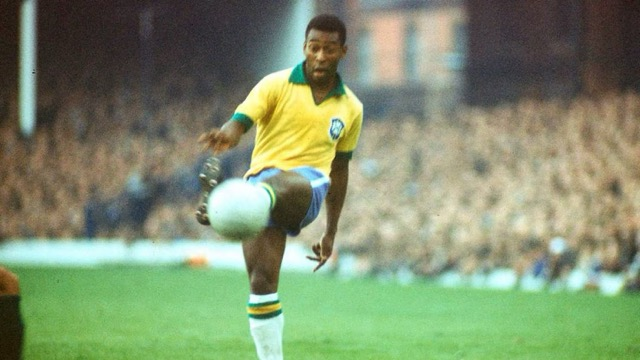

Soccer, also known as football in most parts of the world, is a dynamic and exhilarating sport played between two teams of 11 players on a rectangular field, often referred to as a pitch, with a goal positioned at each end. The primary objective of the game is to score points by getting the ball into the opposing team's net, utilizing any part of the body except the hands and arms. Only the goalkeeper, positioned near the goal, is permitted to use their hands, but only within a designated area known as the penalty box. Matches are typically composed of two 45-minute halves, with a brief halftime interval, totaling 90 minutes of play.
The simplicity of this sport has helped it become the most popular sport worldwide. Its accessibility means that whether in the streets of a bustling city, the beaches of a tropical paradise, or the rural fields of remote villages, soccer can be played anywhere, by anyone, regardless of social or economic background. However, it is a complex sport because of the refined skills needed to master dribbling, passing, positioning and strategic thinking. The art of teamwork and fluid movement on the pitch requires an exceptional level of technical ability, mental agility, and physical endurance, making every match an unpredictable and thrilling spectacle.
Lionel Messi
Diego Maradona
Cristiano Ronaldo
Pelé
| Player | Country | Goals |
|---|---|---|
| Cristiano Ronaldo | 897 | Portugal |
| Lionel Messi | 838 | Argentina |
| Pelé | 762 | Brazil |
| Romario | 755 | Brazil |
| Ferenc Puskas | 724 | Hungary |